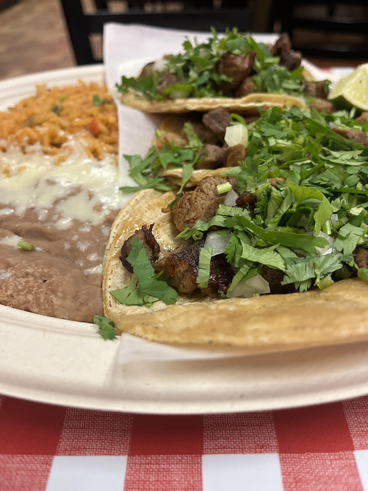

Favorite Foods & Cuisines
I like foods that are flavorful and meaningful to me. Recently, I’ve especially started enjoying Korean BBQ — grilling the meat at the table, trying different cuts, and enjoying all the side dishes makes it a really fun and social meal.
- Tacos, beans, and rice 
- Warm, comforting, and bit-sized.
- Adobo, Fillipino Dish
- Spicy, Chicken, rich flavor.